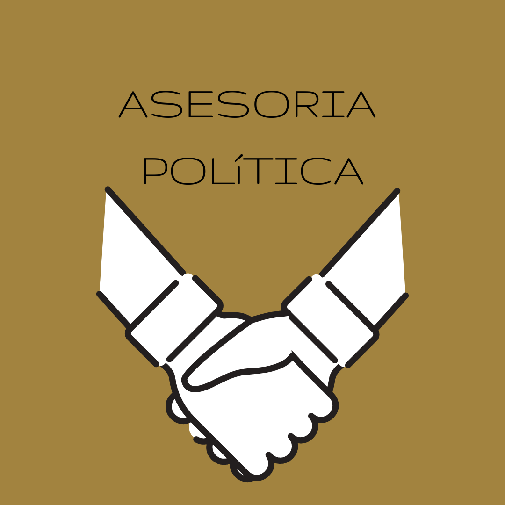
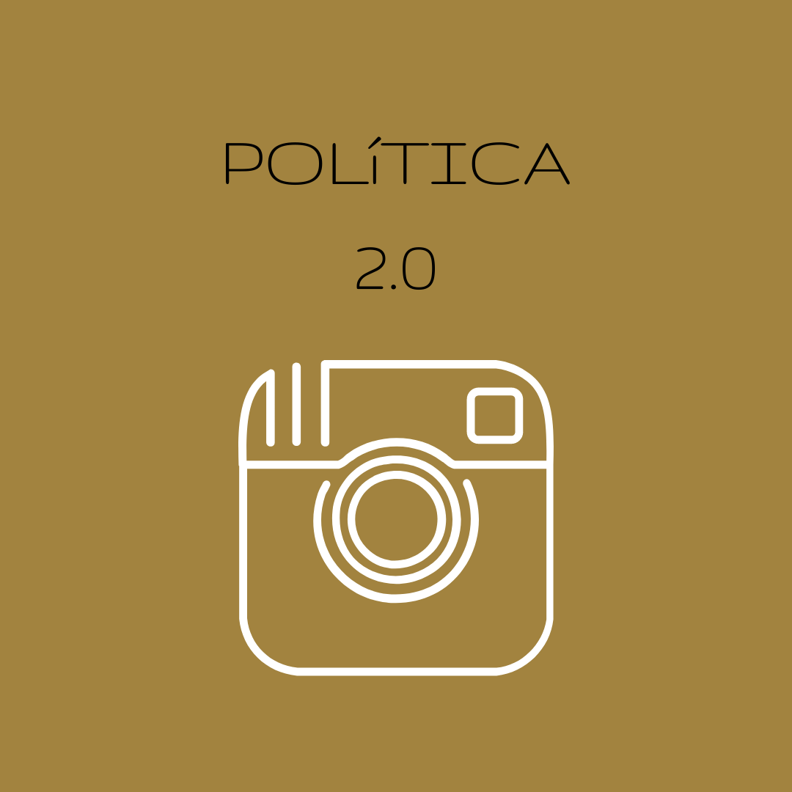
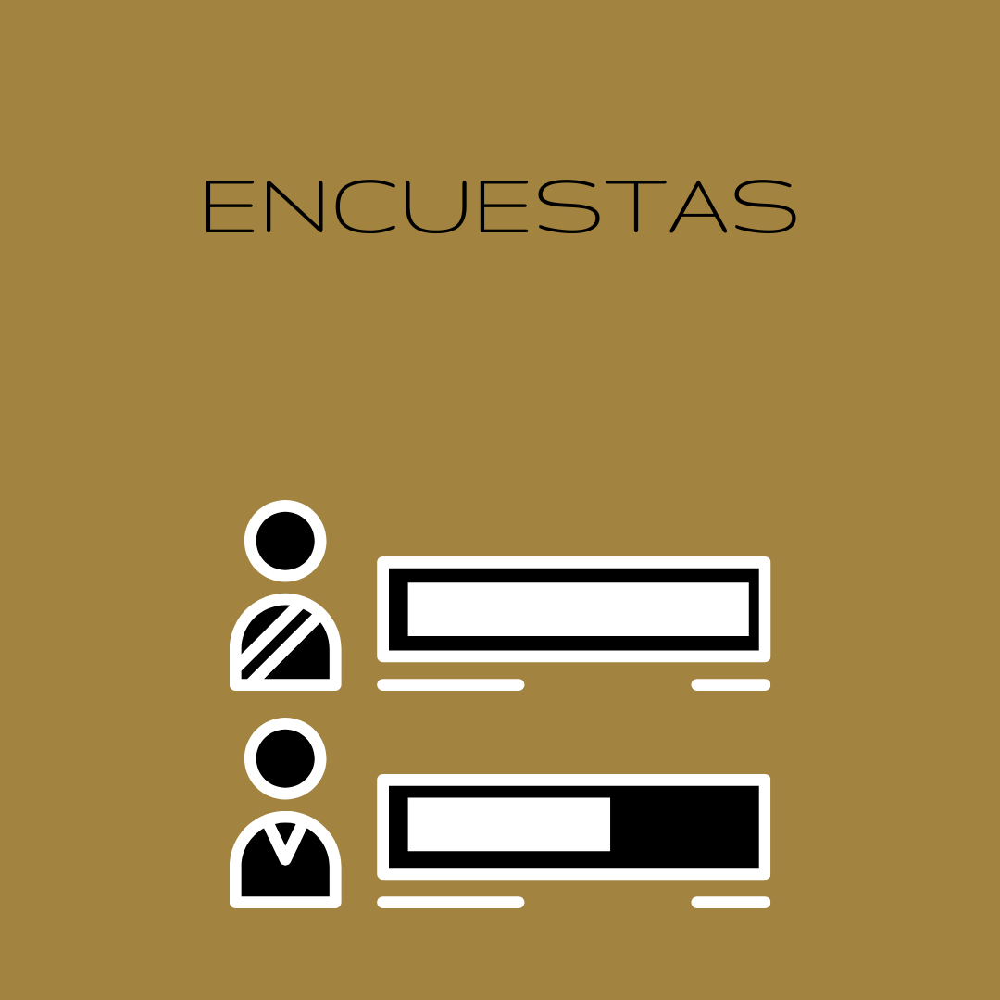

Servicios
Asesoria

Sseguimiento diario a la labor del cliente.
Politica 2.0

La politica 2.0 es la politica digital. Mira un poco mas aqui
Encuestas

Las encuestas son el GPS que nos permite tomar decisiones. Mira las ultimas encuestasaqui
Campaña Electoral

Proselitismo, debate, bunkers.